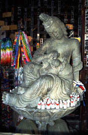

珍寺的秩父札所巡り
え〜と、秩父の札所巡りをしてきました。
もちろん全部の札所を回る程の信仰心も熱意も暇もないので、古本屋の100円均一の棚の中から拾ってきた「秩父三十四カ所」なる本を眺めながら面白そうなところだけをピックアップして行ってきました。
ま、超ド級の珍寺はなかったのですが、秩父の札所という括りもあり、涙目とくしゃみを我慢して杉花粉の吹きすさぶ秩父にまで行って手土産なしじゃああまりにもナンなので、小ネタの寄せ集めですが上記タイトルにてまとめてみました。
ま、チョットお付き合い下さい。
四番 金昌寺/埼玉県秩父市
1319体の石仏が居並ぶと先の本に書いてあったのでそれはそれは広い寺なのだろうと思ったら案外小じんまりしたところであった。
朱塗りの山門はニ階建て。二階には壁がないので中に雛壇状に石像が並んでいるのが良く分かる。しかし二階への階段はないので下から眺めるだけ。残念である。恐らく以前はこの二階にも登らせていたのだろう。
などと後ろ髪をひかれつつ境内に。
さして広くない境内にはその分、高密度の石像密集地帯が形成されている。

そして本堂前には赤ん坊に乳をやる子育観音と呼ばれる石像が安置されている。その西洋彫刻的なプロポーションはマリア観音と称されるのもむべなるかな、といった感じである。
で、本堂の裏手にまわると奥の院と呼ばれるエリアがある。
ここは薄暗い岩屋の陰に弘法大師はじめ様々な石仏が身を寄せあっている場所だ。
石仏マニアはヨダレがダラダラ垂れちゃうような光景なのだろうが、それ以外の方にはちょっと無気味かも。
十六番 西光寺/埼玉県秩父市
「回廊に四国八十八カ所の本尊が並べられている」の件に惹かれて行ってみたが面白味はなかった。
単なるコの字型の回廊であった。
「回廊」で「八十八カ所」とくれば何やら仕掛けがありそうなものだが・・・
本堂横ではお寺の方が両手で筆を持ち同時に一枚の色紙を仕上げて行くという技を披露していた。
凄いとは思ったけど売られている値段にもっと驚いた。
二十八番 橋立寺/埼玉県秩父市
65メートルの岩壁の下に建つお堂が橋立寺の本堂である。その左には奥の院鍾乳洞の入り口がある。
百数十メートルあるという鍾乳洞はむろん胎内潜りとされており、ちょっとした冒険気分が味わえる。
内部には弘法大師の後姿や千手観音などというタイトルがついた鍾乳石が並んでいる。見立てにチョット無理があるぞ。
しかもこの鍾乳洞、鍾乳石があまりキレイではないのが少し悲しい。
あ、写真なくしたから絵を載せときましょう。
三十一番 観音院/埼玉県小鹿野町
今回の最大のお目当てだったのがここ、観音院。
明治26年に焼失したといわれるここの前本堂が栄螺堂だったらしいのだ。
何かその名残りでもないものかと訪れてみた。
門前の駐車場に車を停める。
やや怪しい雰囲気が漂う土産屋を過ぎ、石像では日本最大とうたわれる仁王像を擁する山門を潜り、いざ本堂へ！
・・・ってこれが結構遠い。階段を登る事十数分、やっと本堂に辿り着いた。
現在の本堂はコンクリート造の小さなもので見るべきものは特にない。
むしろ印象的だったのはその背後に迫る30メートル位の絶壁の方だ。
その左には滝があったが水はチョロチョロでなんとも情けない。
本堂には包丁に鍵かけた絵馬が。何を封じるの？料理封じ？それとも・・・
で、納経所にいくと何といにしえの旧本堂の図面が飾られているではないか！
旧本堂は三間四方の三階建、高さは四丈六尺というから約14メートル。床面積はともかく高さは立派なものだ。しかし階段の取り付き等、内部の様子は一切分からない。どうも太田や取手の栄螺堂とは建物のプロポーションが違う。どうやら背後の岩壁に寄り掛かった懸造だったようである。
つまり1階2階は懸造の脚の部分らしい。恐らくその部分に階段を廻して栄螺堂のようなものを作ったのだろうとおもわれる。
↑参考資料；広重「観音霊験記」より
自己申告型の偽栄螺堂だった可能性もあり。やだよ西新井の二の舞いは・・・
ちなみに建立の時期は不明。納経所の人に聞いてみたが「そんなの知らねえよ！」といわれてしまった。
行列できる系のラーメン屋の名物オヤジじゃねえんだからそこまで威張らなくても・・・
それにしても栄螺堂といえば通常内部に安置されるのは板東秩父西国の百観音のレプリカ。
ということは、ここの本尊とは別に観音院の本尊のレプリカを置いてあったんだろうか。何だかテレビの中に映ってるテレビみたいな感じでおかしい。
その他、この寺には十万八千躰の仏像があるという。それらは山のあちこちにある岩窟に安置されており、それらを眺めながらの山歩きもまた楽し。もともと修験者の修行場でもあったので胎内潜りや鎖場などハードなアスレチック気分も味わえる。
おまけ；地蔵寺/埼玉県小鹿野町
実は今回訪れた中で一番インパクトがあったのはここである。
赤い
何だあれは！
水子地蔵だあああああ〜

ここは観音院のすぐ手前にある寺で、山の斜面にそって見渡す限りの水子地蔵の大群がみられる。
山一面が花畑のように赤く染まっているのは、ぜーんぶ水子地蔵である。こんな山の中でこれだけの規模の水子地蔵がある、というのは一体どういう事なのだろう。あまり有名でもないところなのに・・・
さらにおまけ 炸裂する青春メッセージ/埼玉県小鹿野町
秩父市内から観音院に向かう途中で見かけたナイスな物件。
一つ一つのメッセージの内容はあまりにも高尚すぎて凡人の私にはさっぱり分かりませんでした。
炸裂してます。ぶっとんでます。
しかし、このメッセージに囲まれて送る人生って大変そうだなあ。本人が選んだ道だからいいんだけど。
隣に住んでる人とかキ●ガイいが伝染りそう。
2000.3.
珍寺大道場 HOME